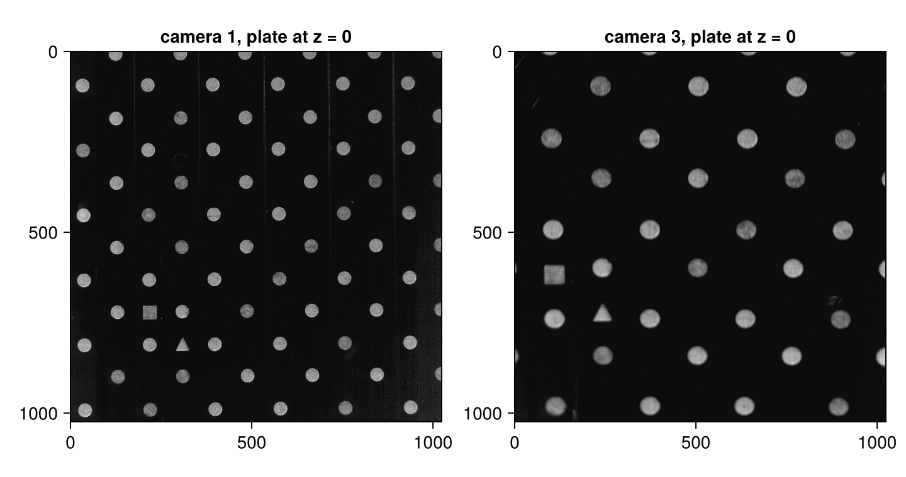
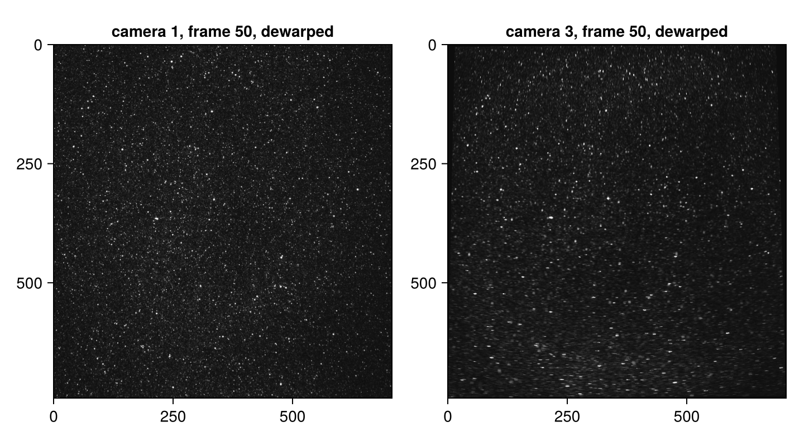
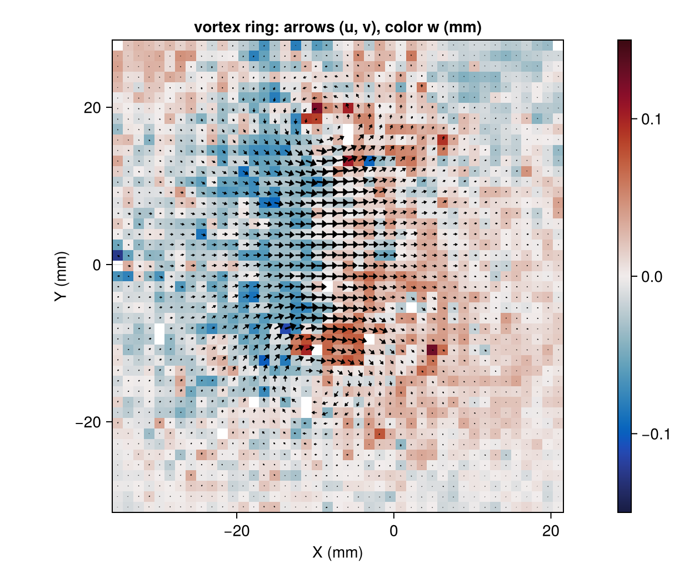

Stereo on a real recording: vortex ring
The synthetic stereo tutorial walked the full stereo chain — plate to three-component field — with ground truth available at every step. This tutorial repeats that chain on a real experiment and teaches what only real data can: what calibration residuals from a physical plate look like, how to judge self-calibration when its convergence flag says no, and how to read a three-component measurement when nobody knows the right answer.
The data is case E of the 4th International PIV Challenge (Kähler et al., 2016): a vortex ring at Re ≈ 2300, recorded time-resolved by R. R. La Foy in the AEThER laboratory at Virginia Tech. We use the two cameras distributed to the Challenge participants: camera 1 views the light sheet head-on, camera 3 is pitched about 25° about the horizontal axis — without a Scheimpflug adapter, so its particle images are kept in focus by a stopped-down aperture instead. Both are 1024 × 1024 px high-speed cameras running at 1000 Hz (consecutive frames are 1 ms apart). A subset ships with Hammerhead's test suite: the calibration plate at three of the seven traverse positions, and two consecutive particle frames per camera.
using Hammerhead
using Statistics: median
dir = joinpath(pkgdir(Hammerhead), "test", "reference_images", "E")
plate(cam, k) = load_image(joinpath(dir, "E_camera_$(cam)_z_$(k).png"))
frame(cam, f) = joinpath(dir, "E_camera_$(cam)_frame_000$(f).png")
using CairoMakie
let
fig = Figure(size = (720, 380))
for (i, cam) in enumerate((1, 3))
ax = Axis(fig[1, i]; title = "camera $cam, plate at z = 0",
yreversed = true, aspect = DataAspect())
image!(ax, plate(cam, 4)'; colormap = :grays)
end
fig
end
A LaVision Type #21 two-level plate: dots every 15 mm on each level, the back level 3 mm behind the front, a filled square anchoring the origin and a filled triangle for orientation. Camera 3's higher magnification — one of this case's deliberate difficulties — means it sees far fewer dots than camera 1.
Detect the plates and calibrate
The plate was traversed through seven Z positions at 1 mm spacing; the committed subset keeps planes 1, 4, and 7 (z = −3, 0, +3 mm) — the minimum three planes the default Soloff model needs, spanning the full traverse range. Detection is identical to the synthetic tutorial; the origin_offset (the origin dot sits 30 mm right of and 7.5 mm above the square marker) comes from the experiment's documentation and is what makes both cameras agree on the world frame:
zs = [-3.0, 0.0, 3.0]
detect(img) = detect_calibration_grid(img; spacing = 15.0,
two_level = true, level_separation = 3.0, origin_offset = (30.0, 7.5))
grids1 = [detect(plate(1, k)) for k in (1, 4, 7)]
grids3 = [detect(plate(3, k)) for k in (1, 4, 7)]
(cam1 = [length(g.pixels) for g in grids1],
cam3 = [length(g.pixels) for g in grids3],
markers = all(g -> g.square !== nothing, [grids1; grids3]))(cam1 = [61, 61, 61], cam3 = [28, 28, 24], markers = true)Camera 1 sees the same 61 dots on every plane; camera 3 sees 28, and loses a few on the last plane as the traverse carries edge dots out of view — normal, the fit simply uses what each plane provides. Now one Soloff model per camera, and the fit-quality check:
cam1 = calibrate_camera(grids1, zs)
cam3 = calibrate_camera(grids3, zs)
(quality1 = calibration_quality(cam1, grids1, zs),
quality3 = calibration_quality(cam3, grids3, zs))(quality1 = (rms = 0.6536067393846066, max = 2.2157828025170243, n = 183), quality3 = (rms = 1.0880213068017837, max = 3.3677237421218953, n = 80))On the synthetic plates of the previous tutorial these residuals were in the thousandths of a pixel. Here they are ~0.7 and ~1.1 px RMS — and that is fine. Re-detecting the plate at different positions reproduces each dot's residual to 0.15–0.3 px: the residuals are dominated by where the dots actually sit on the physical plate (manufacturing tolerance), not by detection noise or model error. Chasing them with a richer model would fit the plate's defects, not the optics. The stereo-rig how-to discusses what residuals to expect and when to worry.
A common grid from the stereo overlap
Both cameras must be dewarped onto one world-plane grid. On real data the grid's extent is not a design parameter you know in advance — it is whatever region both cameras actually see. common_dewarp_grid constructs it: it projects each camera's image border to the z = 0 world plane, intersects the footprints (camera 3's smaller footprint sets the limits here), and — with spacing = :auto — matches the coarsest camera's resolution so dewarping discards no information. Its y range comes out descending, so the dewarped image displays upright (world +Y up); PIV downstream is orientation-agnostic because dv * step(y) carries the sign (see Stereo geometry and self-calibration).
grid = common_dewarp_grid((cam1, cam3), (1024, 1024), 0.0)
dw1 = ImageDewarper(cam1, grid, (1024, 1024))
dw3 = ImageDewarper(cam3, grid, (1024, 1024))
gridDewarpGrid(x = -36.47844857154392:0.0834928:22.550934818257158, y = 29.181952797932098:-0.0834522:-32.656154145834606, z = 0.0)The union mask dw1.mask .| dw3.mask marks grid nodes either camera cannot see; because the grid is the overlap bounding box (not the exact overlap polygon), a few corner regions are masked. Everything downstream excludes them automatically. Here is the same instant through both cameras, dewarped onto the shared grid:
A1 = load_image(frame(1, 50))
A3 = load_image(frame(3, 50))
let
fig = Figure(size = (720, 400))
for (i, (cam, dw, img)) in enumerate(((1, dw1, A1), (3, dw3, A3)))
ax = Axis(fig[1, i]; title = "camera $cam, frame 50, dewarped",
yreversed = true, aspect = DataAspect())
image!(ax, dewarp(dw, img)'; colormap = :grays, colorrange = (0, 0.5))
end
fig
end
The two views now share pixel-for-pixel geometry — the vortex ring's seeded disk sits in the same place in both. They are not identical: camera 3's out-of-focus, non-Scheimpflug particle images are visibly blurrier, and any residual pattern shift between the two is exactly the disparity that self-calibration is about to measure.
Self-calibration, judged like a practitioner
The plate never sits exactly in the light sheet. self_calibrate measures the camera-1-vs-camera-3 disparity on same-instant frames, triangulates where the sheet really is, and rigidly moves both camera models onto it (Wieneke, 2005). Wieneke recommends ensembling 5–50 instants; on seeding this dense, the two committed frames already give a clean disparity correlation:
dw1c, dw3c, report = self_calibrate([frame(1, 50), frame(1, 51)],
[frame(3, 50), frame(3, 51)],
dw1, dw3; keep_disparity_maps = true)
reportSelfCalibrationReport(3 corrections, disparity RMS 2.86 → 0.524 px, not converged)On the synthetic rig this converged below 0.05 px. Here it reports not converged — and that is the single most important lesson of this tutorial: on real data the default tolerance is not the right yardstick. Look at the per-pass numbers instead:
[(disparity_rms = round(p.disparity_rms; digits = 3),
triangulation_rms = round(p.triangulation_rms; digits = 3),
plane = p.plane === nothing ? nothing :
map(x -> round(x; sigdigits = 3), p.plane))
for p in report.passes]4-element Vector{NamedTuple{(:disparity_rms, :triangulation_rms, :plane)}}:
(disparity_rms = 2.862, triangulation_rms = 0.11, plane = (a = -0.677, b = 0.000395, c = -0.0035))
(disparity_rms = 0.519, triangulation_rms = 0.118, plane = (a = 0.000204, b = -0.000318, c = 0.000287))
(disparity_rms = 0.527, triangulation_rms = 0.123, plane = (a = 0.00162, b = -7.93e-5, c = -0.000222))
(disparity_rms = 0.524, triangulation_rms = NaN, plane = nothing)The first pass found a systematic ~2.8 px disparity and triangulated it to a sheet sitting about 0.7 mm behind the plate's z = 0, tilted a quarter of a degree. One correction removes it; the later passes find essentially no further plane (offsets of a few micrometers) while the disparity RMS stalls near 0.5 px. That residual is not misalignment — it is decorrelation noise: the light sheet has thickness, the two cameras weight particles across it differently, and no rigid transform can remove that. Two diagnostics separate "noise floor" from "still misaligned":
- The signed median disparity. Misalignment is systematic; noise is not. The median magnitude stays at the noise floor, but the signed component medians collapse:
maps = report.disparity_maps
[begin
ok = .!(m.outliers .| m.mask)
(median_du = round(median(m.u[ok]); digits = 2),
median_dv = round(median(m.v[ok]); digits = 2))
end for m in maps]4-element Vector{@NamedTuple{median_du::Float64, median_dv::Float64}}:
(median_du = -0.04, median_dv = -2.82)
(median_du = -0.04, median_dv = -0.02)
(median_du = -0.05, median_dv = 0.0)
(median_du = -0.05, median_dv = 0.0)A 2.8 px systematic v-disparity became a few hundredths of a pixel — two orders of magnitude below the residual RMS. The correction is done.
- The triangulation RMS (~0.1 px here): how well the disparity vectors agree with any plane. If it were large while the final disparity stayed small, the problem would be the calibration itself, not the sheet position.
Reconstruct three components
passes = multipass_parameters([64, 32, 32];
padding = true, apodization = :gauss, uncertainty = true)
B1 = load_image(frame(1, 51))
B3 = load_image(frame(3, 51))
stereo = run_piv_stereo(A1, B1, A3, B3, dw1c, dw3c, passes)StereoPIVResult{Float64}(43×45 grid, 13 outliers, 2 masked)The StereoPIVResult's grid and units are world-side: positions in mm, displacements in mm per frame interval (1 ms here — multiply by 1000 for m/s; Hammerhead does not yet apply time scaling itself). Its mask and outliers are the unions of the per-camera flags: a stereo vector is only as good as both 2C measurements underneath it, and the per-camera results remain available as stereo.cam1 / stereo.cam2.
sel = .!(stereo.mask .| stereo.outliers)
(vectors = size(stereo.u), valid = count(sel),
outliers = count(stereo.outliers .& .!stereo.mask))(vectors = (45, 43), valid = 1920, outliers = 13)let
fig = Figure(size = (620, 520))
ax = Axis(fig[1, 1]; title = "vortex ring: arrows (u, v), color w (mm)",
xlabel = "X (mm)", ylabel = "Y (mm)", aspect = DataAspect())
w = copy(stereo.w); w[.!sel] .= NaN
hm = heatmap!(ax, stereo.x, stereo.y, permutedims(w);
colormap = :balance, colorrange = (-0.15, 0.15))
u = copy(stereo.u); u[.!sel] .= NaN
v = copy(stereo.v); v[.!sel] .= NaN
plot_vector_field!(ax, stereo.x, stereo.y, u, v)
Colorbar(fig[1, 2], hm)
fig
end
The section through the ring shows the two counter-rotating cores, and the out-of-plane component w — invisible to either camera alone — is comparable to the in-plane motion. With no ground truth, the quality evidence is the same as in the planar real-data tutorial, now propagated into world units:
med(f) = round(1000 * median(filter(isfinite, f[sel])); digits = 1) # mm → µm
(σu = med(stereo.uncertainty_u), σv = med(stereo.uncertainty_v),
σw = med(stereo.uncertainty_w))(σu = 3.0, σv = 2.9, σw = 12.9)The in-plane components resolve to a few micrometers; w is about four times worse. That ratio is pure geometry: with one head-on camera and one at 25°, a unit of out-of-plane motion produces less than half a unit of image-plane disparity, so the reconstruction amplifies the correlation noise. Steeper viewing angles would shrink it — the textbook ±45° rig has a ratio near 1. Reading σw/σu from the result tells you what your rig, not your correlator, can resolve.
What did self-calibration actually buy?
A natural check: run the same reconstruction with the uncorrected dewarpers and compare.
stereo0 = run_piv_stereo(A1, B1, A3, B3, dw1, dw3, passes)
both = sel .& .!(stereo0.mask .| stereo0.outliers)
Δ(a, b) = round(1000 * median(abs.(a[both] .- b[both])); digits = 1) # µm
(Δu = Δ(stereo.u, stereo0.u), Δv = Δ(stereo.v, stereo0.v),
Δw = Δ(stereo.w, stereo0.w))(Δu = 1.2, Δv = 0.3, Δw = 5.0)The vectors barely move — the median change in every component is below its own uncertainty. That is expected, and it reframes what the correction is for: a 0.7 mm, 0.25° plate-to-sheet misregistration hardly perturbs the displacement values, but it means the uncorrected result reports them at the wrong place — a coordinate system attached to the plate, not to the fluid that was actually illuminated, with the two cameras' interrogation windows sampling regions offset by the 2.8 px disparity. Self-calibration buys you the coordinate system: the measurement plane where the light sheet really is, and both cameras correlating the same fluid. On flows with strong gradients that window misregistration also biases the vectors themselves; here the check confirms the geometry was the main casualty.
Where to go next
- What residuals to expect from physical plates, and the full rig-calibration checklist: Calibrate a real stereo rig.
- The geometry behind disparity, triangulation, and the plane fit: Stereo geometry and self-calibration.
- What the per-vector σ does and does not cover: Uncertainty quantification.
- Time-resolved sequences (this recording has 100 frames): Batch processing and Ensemble correlation.
This page was generated using Literate.jl.